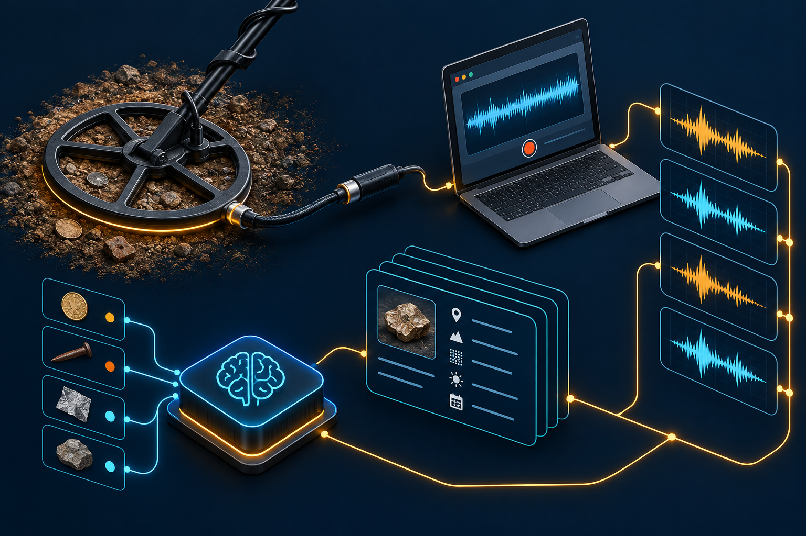
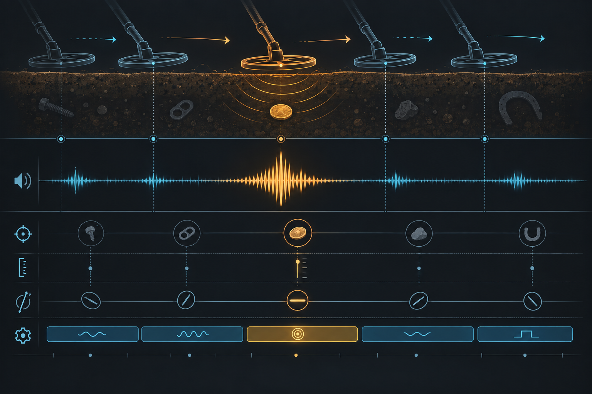
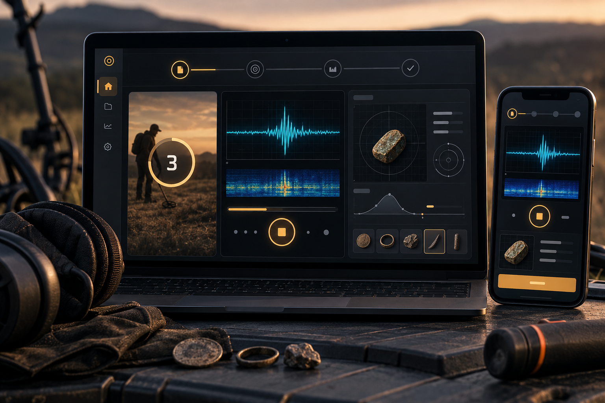

LABORATORIO DE SEÑALES · PROTOCOLO REPRODUCIBLE
Convierte cada pitido en evidencia entrenable.
Un grabador de navegador para construir datasets de detectores de metales baratos con contexto, trazabilidad y una arquitectura preparada para la IA.
01 · CAPTURE STUDIO
Prepara una sesión de referencia
Define una vez el objetivo y deja que el protocolo guíe las 12 tomas: 3 orientaciones × 4 maniobras, con 5 cm como profundidad base.
La captura usa el micrófono seleccionado y guarda audio + metadatos en IndexedDB. Nada sale del dispositivo sin exportación explícita.
Tu protocolo aparecerá aquí
Crea una sesión para activar la guía paso a paso.
02 · COGNITIVE ARCHITECTURE
Separar señal, contexto y decisión.
La versión avanzada trata cada registro como una observación reproducible: el audio es sólo una capa de una muestra que también contiene protocolo, dispositivo y condiciones.
Leer contrato de datos →

03 · EVIDENCE LAYERS
La IA aprende del patrón completo.
Movimiento, forma de onda y condiciones de la toma se mantienen alineados. Así podemos comparar monedas, basura metálica y variaciones ambientales sin perder el contexto que explica una señal.
Audio crudoMediaRecorder, sin filtros de usuario
Contextoobjetivo, orientación, profundidad y modo
Provenienciaversión de esquema y calidad revisable
04 · LOCAL LIBRARY
Tu biblioteca, en tu dispositivo.
Las sesiones viven en IndexedDB para trabajar sin cuenta y sin subir material sensible. Exporta sólo cuando quieras entrenar, analizar o compartir.
- Las sesiones guardadas aparecerán aquí.
05 · FROM FIELD TO MODEL
Un flujo que escala contigo.
Empieza grabando una moneda y termina comparando familias de detectores. El contrato no te obliga a entrenar todavía; te prepara para hacerlo con datos fiables.
